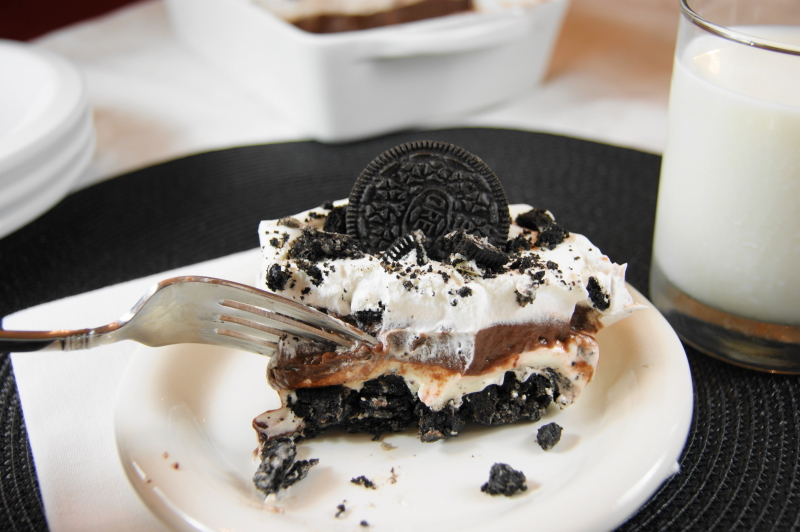

Oreo Icebox Dessert

Description:
This classic Oreo Icebox Dessert features creamy layers of Oreos, pudding, and whipped cream. Yum!
Ingredients:
- 1 (15 oz.) package Oreos, crushed
- 6 T. butter, melted
- 1 (8 ox.) package cream cheese, softened
- 1 c. confectioners' sugar
- 1 large (5.1 oz.) box instant chocolate pudding + milk to prepare, as specified on the pudding package
- 1 large (16 oz.) container Cool Whip whipped topping
Directions:
- Set aside about 1/4 cup crushed Oreos. Mix remaining crushed Oreos with the melted butter. Press into the bottom of a 9x13" baking dish.
- Combine cream cheese and confectioners' sugar; mix well. Fold in 1/2 of the Cool Whip until well combined. Spread the cream cheese mixture over the crushed Oreo layer. Chill for 20 minutes.
- Prepare chocolate pudding according to package directions. Spread over cream cheese layer. Chill for 20 minutes.
- Spread remaining Cool Whip over the pudding layer. Sprinkle reserved crushed Oreos on top. Chill for 8 hours or overnight before serving.